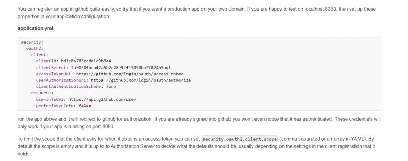
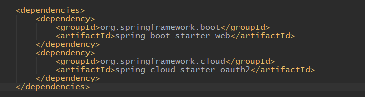
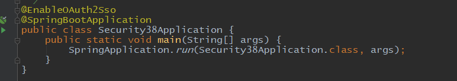
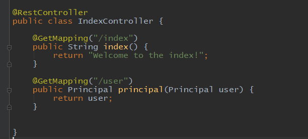
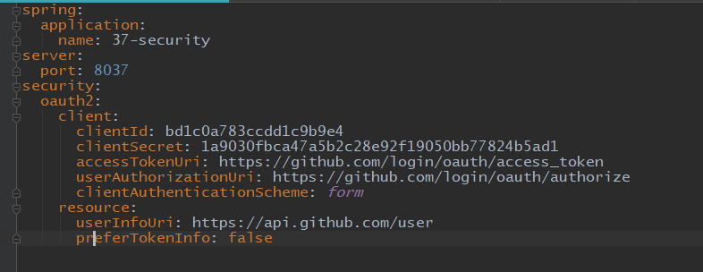
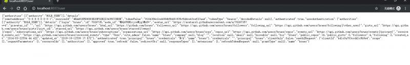
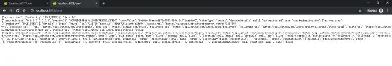

关于oauth2.0，最后我们再来学习一下单点登录。前面介绍过单点登录的定义，单点登录（Single Sign On），简称为 SSO，是目前比较流行的企业业务整合的解决方案之一。SSO的定义是在多个应用系统中，用户只需要登录一次就可以访问所有相互信任的应用系统。
关于单点登录，springcloud G版本的官方文档地址如下：
关于单点登录的例子有很多，最常见的就是我们在百度登录以后，百度网盘，百度知道，百度翻译等功能网站都会自动登录百度的账号，还有就是qq或者微信登录以后，其它腾讯的游戏等app也可以一键登录，等等。例子有很多。对于第三方授权的应用，不需要使用单点登录，但是对于同一个企业内的不同服务和软件之间的账号共享来说，单点登录是一个必要的功能。
spring cloud oauth对sso是有支持的，而且使用和配置非常简单。可以使用第三方的授权服务，如GitHub，也可以自己构建授权服务。下面来用github实现一个简单的sso。
首先要去github上面登记一下，地址如下：
这里我们不再自己去登记，而是使用官方文档中演示的登记好的id和秘钥：

clientId和clientSecret分别是：
bd1c0a783ccdd1c9b9e4
1a9030fbca47a5b2c28e92f19050bb77824b5ad1
而sso客户端的配置正如上面图片演示的一样。下面来新建两个项目，依赖只引入web和oauth：

项目的启动类中需要加入一个@EnableOAuth2Sso注解：

创建两个简单的接口：

最后就是配置文件的配置，基本上内容和官网的示例一样：

这里两个项目基本一样，另一个项目的代码和配置也是一样。security不写任何配置类，使用默认即可。
启动两个项目，访问其中一个的/user接口：
会直接跳转到github的登录页面：
可以注意看一下上面地址栏中的地址，会非常熟悉。这里可以输入自己的github账号，然后点击登录，就会自动回跳到我们原来访问的/user地址：

可以看到，我们自己的项目自动登录成功了，并返回了当前的用户数据，这个用户其实就是github的账户。
现在上面的第一个项目已经登录成功，并访问了接口，下面来直接访问第二个项目：

可以看到第二个项目并没有再跳转登录，而是直接处于登录状态，并且账号信息与前面项目的一样。这就是简单sso的演示。
代码地址： https://gitee.com/blueses/spring-boot-security 37 38
本文由博客一文多发平台 OpenWrite 发布！